<!DOCTYPE html>
<html lang="en">
  <head>
    <meta charset="utf-8" />
    <meta name="viewport" content="width=device-width, initial-scale=1.0, maximum-scale=1.0, user-scalable=no" />

    <title>Fotografia Koncertowa</title>
    <link rel="stylesheet" href="./css/reveal.css" />
    <link rel="stylesheet" href="./css/theme/black.css" id="theme" />
    <link rel="stylesheet" href="./css/highlight/zenburn.css" />
    <link rel="stylesheet" href="./css/print/paper.css" type="text/css" media="print" />

  </head>
  <body>
    <div class="reveal">
      <div class="slides"><section  data-markdown><script type="text/template">
    <style>
        .slide h1, .slide h2, .slide h3, .slide h4 {
            font-weight: normal;
            text-transform: none;
        }

        h1 strong {
            color: #d30102;
        }

        h2 strong {
            color: #d30102;
        }

        h3 strong {
            color: #b58900;
        }

        h4 strong {
            color: #2aa198;
        }
        .hl1 {
            color: #d30102;
        }
        .hl2 {
            color: #b58900;
        }
        .hl3 {
            color: #2aa198;
        }
        .dimm {
            color: #333;
        }
        .dimm2 {
            color: #666;
        }

        .smaller {
            font-size: 75% !important;
        }
        .smaller2 {
            font-size: 70% !important;
        }
        .smaller3 {
            font-size: 65% !important;
        }
        .smaller4 {
            font-size: 60% !important;
        }
        .smaller5 {
            font-size: 55% !important;
        }
        .smaller6 {
            font-size: 50% !important;
        }

        .tip-id {color: rgba(255,255,255,.1);
                 font-size: 30% !important;
                 vertical-align: top !important;
        }

        :not(pre) > code.hljs {
            display: inline !important;
        }

        pre mark {
            border: 5px dashed #859900 !important;
            background-color: rgba(255,255,0,.035);
            color: inherit;
            padding: 4px !important;
        }

        img {
            border: none !important;
        }
    </style>

<!-- .slide: data-background="./media/001_title2.jpg" data-background-opacity="0.2" -->
# Jak nie robić zdjęć<br>na koncertach

*by* Diodor Sirola

[diodor.sirola@gmail.com](mailto:diodor.si@samsung.com)</script></section><section  data-markdown><script type="text/template"><!-- .slide: data-background="./media/001_title2.jpg" data-background-opacity="1" --></script></section><section ><section data-markdown><script type="text/template"># O mnie

Fotografuję koncerty na Juwenaliach. Od zawsze.

... i tylko tam ;) <!-- .element: class="fragment" -->

A moja główna dziedzina to akty. <!-- .element: class="fragment" --></script></section><section data-markdown><script type="text/template">(bez cenzury)

[https://diodorsirola.maxmodels.pl](https://diodorsirola.maxmodels.pl)

(wymaga logowania)

[https://35photo.pro/diodorsirola](https://35photo.pro/diodorsirola)</script></section><section data-markdown><script type="text/template"># Instagram
### @diodorsirola
</script></section></section><section  data-markdown><script type="text/template"># Przed koncertem</script></section><section ><section data-markdown><script type="text/template">## Sprawdź pogodę
ale i tak przygotuj się na deszcz

(pogoda zapowiada się nieźle!)</script></section><section data-markdown><script type="text/template">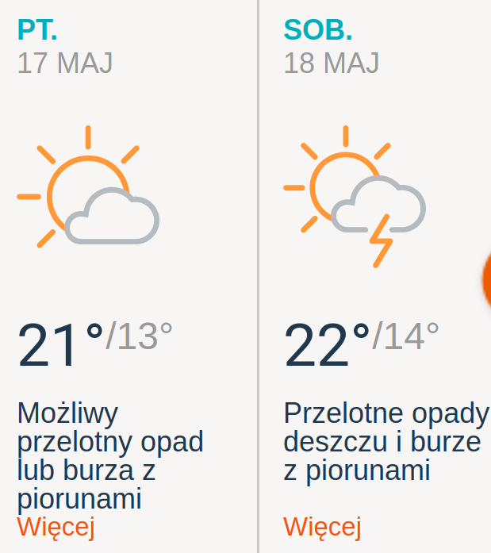</script></section><section data-markdown><script type="text/template">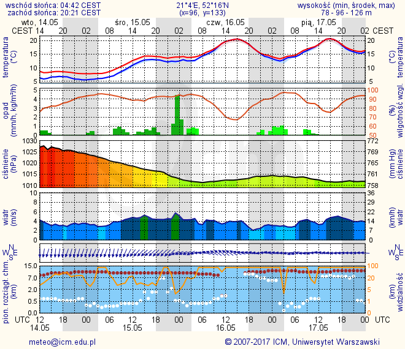</script></section></section><section  data-markdown><script type="text/template">## Weź rękawiczki bez palców
jak ma być chłodno.</script></section><section  data-markdown><script type="text/template">## Weź wielorazowe chemiczne [ogrzewacze dłoni](https://pl.wikipedia.org/wiki/Ogrzewacz_d%C5%82oni)
[Bywają w lidlu po 10 PLN](https://www.youtube.com/watch?v=jUbbyqsrAEM)</script></section><section  data-markdown><script type="text/template">## Ubierz się ciepło
podwójne skarpety i bluza pod kurtkę nie są głupim pomysłem

Zawsze można się rozebrać ;) <!-- .element: class="dimm" --></script></section><section  data-markdown><script type="text/template">## Jeśli masz wadę wzroku
soczewki kontaktowe <br>mogą być wygodniejsze niż okulary</script></section><section  data-markdown><script type="text/template">## Znaj swój sprzęt
obsługa i możliwości

Szczegóły później <!-- .element: class="dimm smaller4" --></script></section><section  data-markdown><script type="text/template">## Naładuj baterie
zapasowa bateria w plecaku

nie w gripie, bo ciężko! <!-- .element: class="hl3" --></script></section><section  data-markdown><script type="text/template">## Zamontuj pasek do aparatu!</script></section><section  data-markdown><script type="text/template">## Przygotuj **najszybszą** kartę pamięci jaką masz
3 piosenki to mało czasu</script></section><section  data-markdown><script type="text/template">## Wyczyść obiektywy i matrycę
paprochy nie są sexy</script></section><section ><section data-markdown><script type="text/template">## Zabierz wygodny<br>plecak/torbę foto
ja mam [Lowepro SlingShot 200 AW](https://www.cyfrowe.pl/archiwum/aparaty/lowepro-slingshot-200-aw.html) i jest OK</script></section><section data-markdown><script type="text/template">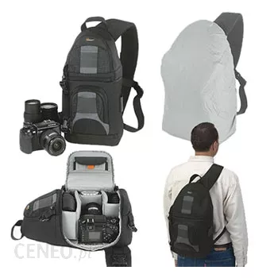</script></section></section><section  data-markdown><script type="text/template">## Ogranicz ilość sprzętu
może nie być czasu na użycie<br>wszystkich 10 obiektywów ;)</script></section><section  data-markdown><script type="text/template"># Jaki obiektyw?</script></section><section  data-markdown><script type="text/template">## Ostry
ze sprawnym i trafiającym AF</script></section><section  data-markdown><script type="text/template">## Jasny
może być ciemno</script></section><section  data-markdown><script type="text/template">## Zoom
70-200/2.8 + 28-70/2.8</script></section><section  data-markdown><script type="text/template">## W praktyce
to, co masz i co ci leży</script></section><section ><section data-markdown><script type="text/template">## Moje statystyki
* Juwenalia 2018:
 * 70-200/2.8: 66%
    * 55% powyżej 100mm
    * 13% na max 200mm
 * 85/1.4: 29%
 * 35/1.4: 5%</script></section><section data-markdown><script type="text/template">* Studnia 2018:
 * 70-200/2.8: 42%
 * 35/1.4: 25%
 * 85/1.4: 15%
 * 50/1.4: 9%
  * 16-35/2.8: 8%
 * 28/2.8: 1%</script></section><section data-markdown><script type="text/template"> * Juwenalia 2014:
   * 70-200/2.8: 95%
   * 28-75/2.8: 5%</script></section></section><section  data-markdown><script type="text/template"># Warto zabrać też
(low-budget) <!-- .element: class="dimm" --></script></section><section  data-markdown><script type="text/template">## Foliowy płaszcz przeciwdeszczowy
**[3 PLN]** Gdzie?! W kiosku.

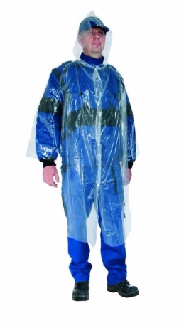</script></section><section ><section data-markdown><script type="text/template">## Stopery do uszu
**[2 PLN]** W każdej aptece, proś o "stoper woskowy".
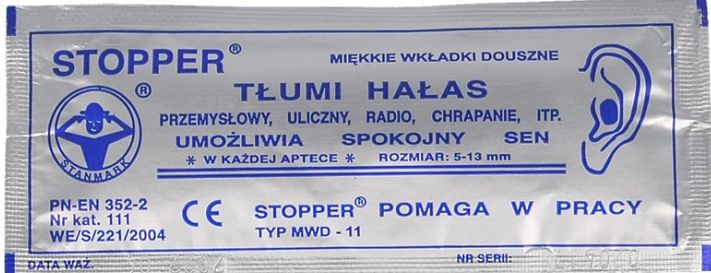</script></section><section data-markdown><script type="text/template">Jeśli jesteś tylko na 3 piosenki pod sceną &ndash; da radę bez.

Ale jeśli chcesz czatować</script></section></section><section  data-markdown><script type="text/template">## 2 średnie mocniejsze<br>worki na śmieci
**[0.20 PLN]**
Nic nie ważą, a jak zacznie padać można szybko owinąć nimi sprzęt.</script></section><section  data-markdown><script type="text/template">## Tulipany do każdego obiektywu
czyli osłony przeciwsłoneczne.

Sprawdzają się też jako osłony przeciwdeszczowe i przeciwuderzeniowe.</script></section><section  data-markdown><script type="text/template">## Kilka gumek recepturek
czymś te worki trzeba przymocować do aparatu</script></section><section  data-markdown><script type="text/template">## Schodki składane*
[70 PLN] w [castoramie](https://www.castorama.pl/schodki-skladane-2-stopniowe-pcv-id-1028806.html)

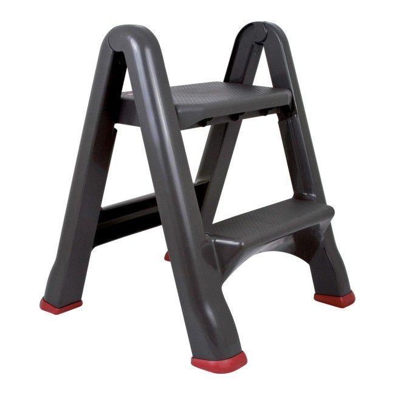</script></section><section  data-markdown><script type="text/template"># Sprawy organizacyjne</script></section><section  data-markdown><script type="text/template">## Zrób screena z maila
zasięg na miejscu może być bardzo słaby</script></section><section  data-markdown><script type="text/template">## Przyjdź wcześniej.
Koncert nie zaczeka.</script></section><section  data-markdown><script type="text/template">### Weź swój "prowiant" (o ile się da...)</script></section><section  data-markdown><script type="text/template">## Sprawdź jak odebrać identyfikator
### i gdzie masz go **oddać po koncercie**.</script></section><section  data-markdown><script type="text/template">## Zamelduj się w FocuPunkcie.
### (Więcej info będzie w mailu)</script></section><section  data-markdown><script type="text/template"># Tuż przed koncertem</script></section><section  data-markdown><script type="text/template">## Dowiedz się ile masz piosenek
#### najczęściej: 3 albo no-limit</script></section><section  data-markdown><script type="text/template">## Dowiedz się jak dojść do fosy
#### czyli do miejsca między sceną a barierkami
#### (może w tym roku będzie wejście z prawej?)</script></section><section  data-markdown><script type="text/template">## Idź do fosy
#### pokazuj opaski/identyfikatory ochronie
najczęściej patrzą tylko na opaski <!-- .element: class="dimm2"--></script></section><section  data-markdown><script type="text/template">## Czekaj na początek koncertu
#### możesz robić zdjęcia co ciekawszym <br>egzemplarzom w tłumie</script></section><section  data-markdown><script type="text/template"># Zaczyna się koncert!</script></section><section  data-markdown><script type="text/template"># **Fotografuj!!!**
#### do czasu sygnalizacji przez ochronę, że to już</script></section><section  data-markdown><script type="text/template">## Nie zmieniaj ciągle obiektywów
Staraj się nie wracać do poprzednich obiektywów.

Jak już masz obiektyw założony, fotografuj nim przynajmniej pół piosenki.</script></section><section  data-markdown><script type="text/template">## Opuść fosę.
Nie przeciągaj.</script></section><section  data-markdown><script type="text/template">**Uwaga!** Czasem nie musisz całkowicie<br> schodzić spod sceny!</script></section><section  data-markdown><script type="text/template">## Czatuj z boku sceny
z długim obiektywem. 200 mm jest całkiem OK.

Będziesz wtedy stał pod samym głośnikiem, więc zatyczki do uszu się przydadzą.</script></section><section  data-markdown><script type="text/template">## Wróć spod sceny<br>i zgraj foty na backup
o ile będzie taka opcja</script></section><section  data-markdown><script type="text/template"># Jak fotografować?</script></section><section  data-markdown><script type="text/template"># Sprawy techniczne</script></section><section  data-markdown><script type="text/template">## RAW
chyba, że jesteś foto live. Wtedy zgodnie<br>z ustaleniami z twoim edytorem.<!-- .element: class="smaller4"--></script></section><section  data-markdown><script type="text/template">## Ustaw zdjęcia serią*
później się wykasuje

\* o ile masz szybką kartę pamięci <!-- .element: class="smaller4"--></script></section><section  data-markdown><script type="text/template">## Ustaw _dobry_ tryb AF
* Jeśli ciągły + tracking działa &ndash; dobra opcja
* Jeśli masz dobry AF na LV (detekcja fazy) &ndash; użyj LV
* Jeśli AF to loteria &ndash; ostrz manualnie
  * manualny Focus Bracketing!
* ...</script></section><section ><section data-markdown><script type="text/template">## Migawka
Najwolniej 1/250 jeśli chcesz mieć ostre zdjęcia

Stats: 1/250: 32%, 1/320: 49%, 1/500: 18%, 1/800: 1%</script></section><section data-markdown><script type="text/template">Chyba, że to koncert Kultu, to 1/40 nawet będzie ok.
Kazik się nie rusza.</script></section></section><section ><section data-markdown><script type="text/template">## Przysłona
Szeroko! Ale żeby nie było mydła.

Czasem opłaca się przymknąć o stopień lub dwa.

Stats: 2.8: 66%, 1.4: 34%</script></section><section data-markdown><script type="text/template">## Czy przymykać przysłonę żeby uzyskać większą głębię ostrości?

Na full frame: różnica między np. 2.8 a 3.2 jest na tyle mała, że jak nie trafisz z ostrością to i tak będzie nieostre. Najlepiej robić na największej nie-mydlanej przysłonie i liczyć na szczęście.</script></section></section><section  data-markdown><script type="text/template">## ISO
Jak najniższe, ale nigdy więcej niż używalne.

Stats: 300-800: 76%, 1000-2000: 12%, 2500-32000: 13%</script></section><section ><section data-markdown><script type="text/template">## Tryb
Taki, jaki lubisz i umiesz.</script></section><section data-markdown><script type="text/template">* Jak jest widno:
  * priorytet przysłony (A),
  * pomiar matrycowy.</script></section><section data-markdown><script type="text/template">* Jak jest ciemno:
  * manual (M)<br>

przy stroboskopach i światłach LED z PWM<br> tryb auto może zgłupieć <!-- .element: class="smaller4"--></script></section><section data-markdown><script type="text/template">Jeśli Twój aparat obsługuje<br>tryby użytkownika (C1, C2, C3) ustaw:
 * C1 na scenę, AF-C + tracking
 * C2 na scenę, AF-S, tylko punkty krzyżowe
 * C3 na publikę</script></section></section><section ><section data-markdown><script type="text/template">## Preferuj jaśniej niż ciemniej
EV+0.5</script></section><section data-markdown><script type="text/template">Jak nie doświetlisz zdjęcia przy ISO 2000, powodzenia przy wyciąganiu cieni.

Delikatne prześwietlenie zazwyczaj da się uratować w obróbce.</script></section></section><section ><section data-markdown><script type="text/template">## Flicker!</script></section><section data-markdown><script type="text/template">Uwaga na kiepskie światła z modulacją PWM!

W tym na tanie żarówki LED.</script></section><section data-markdown><script type="text/template">Migają z częstotliwością ok 100Hz i mają bardzo małą bezwładność. Przy czasie 1/250 można trafić na ciemność.

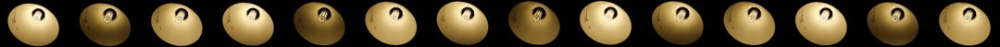
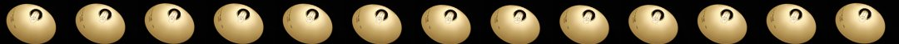</script></section><section data-markdown><script type="text/template">Przy scenicznych jest jeszcze gorzej. Włączenie funkcji "Anti Flicker" w aparacie może problem jeszcze pogłębić.</script></section><section data-markdown><script type="text/template">Przed koncertem (na nie swoim koncercie, z publiczności) zrobić serię zdjęć świateł z czasem naświetlanie 1/300..1/500. Zobaczyć czy różnią się jasnością.</script></section></section><section  data-markdown><script type="text/template"># Kompozycja</script></section><section ><section data-markdown><script type="text/template">## Zjadanie mikrofonu</script></section><section data-markdown><script type="text/template">### Źle
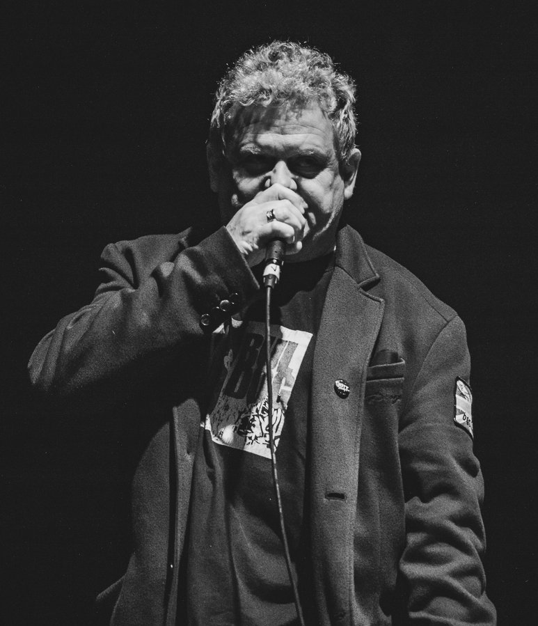</script></section><section data-markdown><script type="text/template">### Lepiej
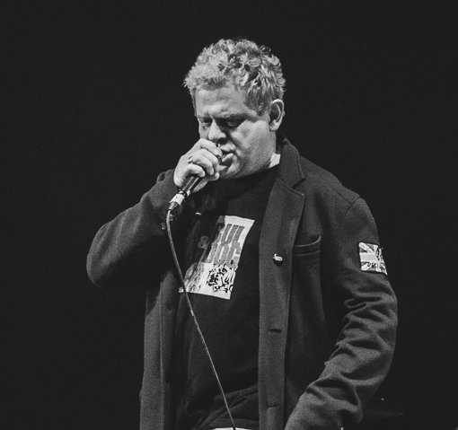</script></section><section data-markdown><script type="text/template">### Lepiej
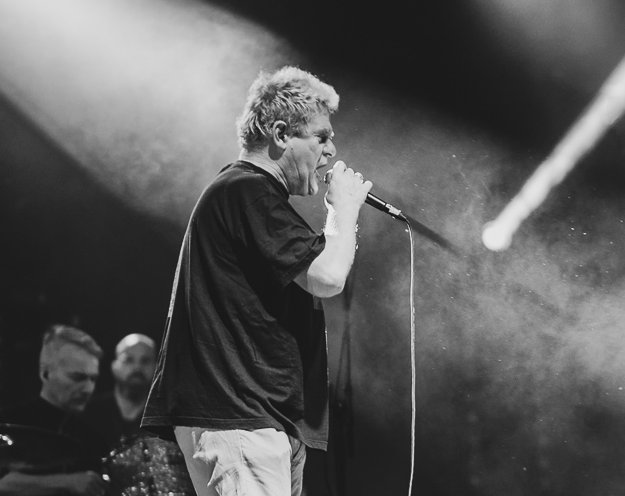</script></section></section><section ><section data-markdown><script type="text/template">## Perspektywa z fosy
żabia perspektywa jest ogólnie niekorzystna dla ludzi</script></section><section data-markdown><script type="text/template">#### Mężczyźni: zazwyczaj to nie problem
i tak są brzydale więc nic im nie zaszkodzi :P <!-- .element: class="dimm"--></script></section><section data-markdown><script type="text/template">#### Kobiety: ... :/
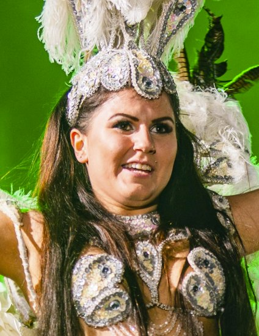</script></section><section data-markdown><script type="text/template">Schodki trochę pomagają.

Ale trzeba uważnie obserwować sytuację.</script></section><section data-markdown><script type="text/template">### Lepiej
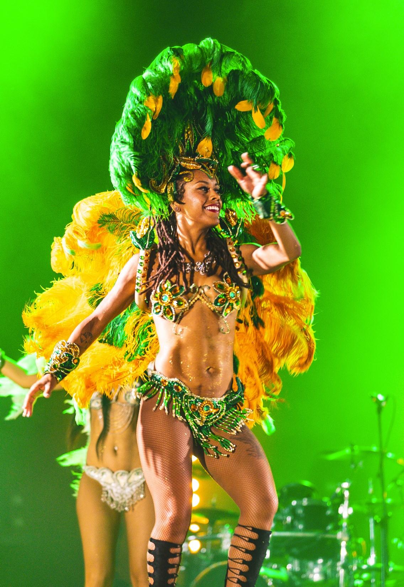</script></section></section><section ><section data-markdown><script type="text/template">## Statywy</script></section><section data-markdown><script type="text/template">### Źle
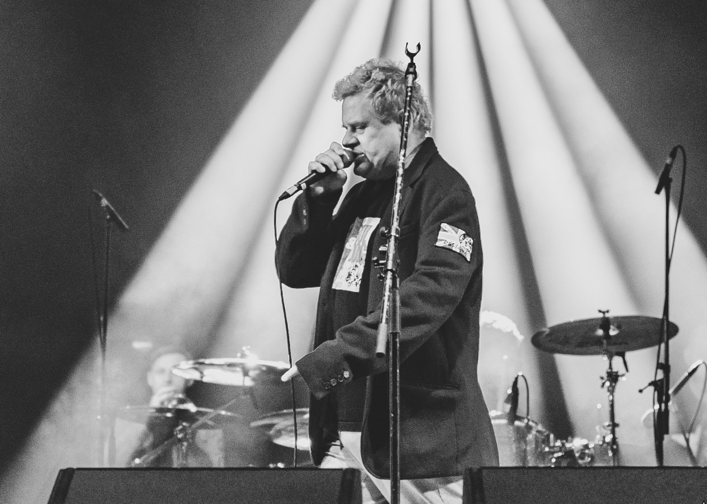</script></section><section data-markdown><script type="text/template">### Lepiej
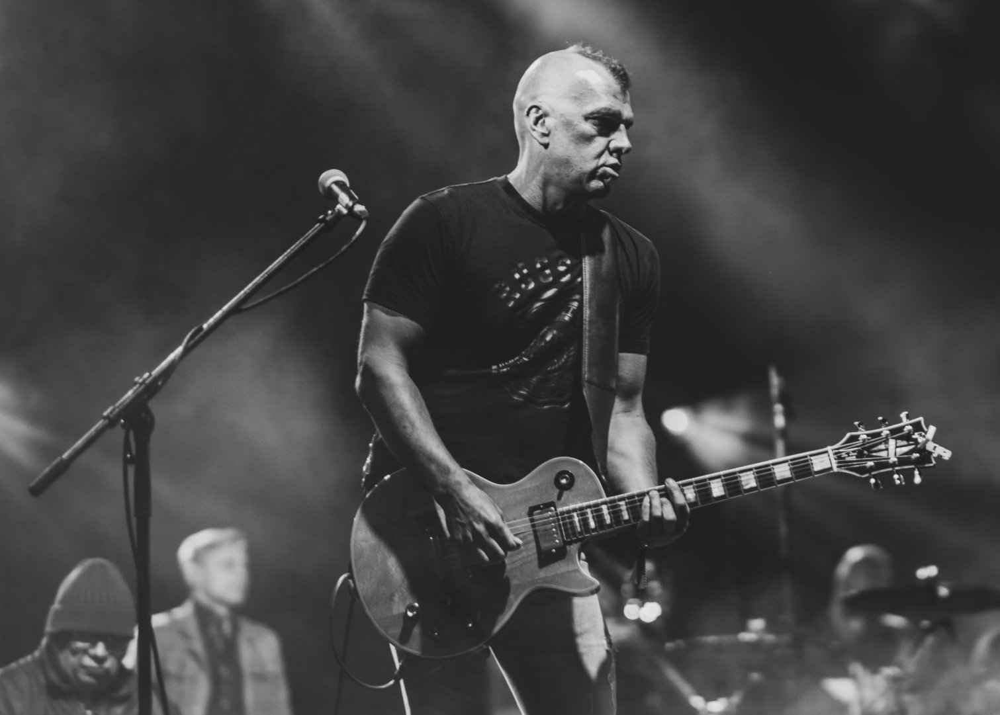</script></section><section data-markdown><script type="text/template">### Lepiej? - retusz
(nie patrzcie na kompozycję) <!-- .element: class="smaller4"-->
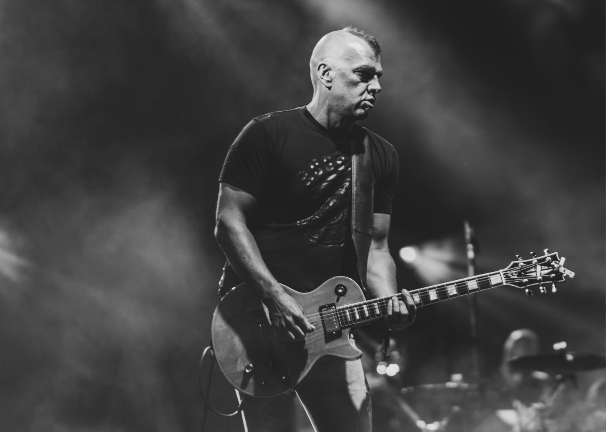</script></section></section><section  data-markdown><script type="text/template"># Tips & Tricks</script></section><section  data-markdown><script type="text/template">## Szukaj przekątnych. Dynamiczna kompozycja bywa ciekawsza.</script></section><section  data-markdown><script type="text/template">## Obserwuj światło. Wzory powtarzają się co jakiś czas.</script></section><section  data-markdown><script type="text/template">## Poluj na promienie świecone zza wykonawcy.</script></section><section  data-markdown><script type="text/template">## Szukaj kadrów i miejsc, które będą unikalne.</script></section><section  data-markdown><script type="text/template">## Znaj swój cel.
 * Robisz reportaż? Opowiedz historię, pokaż cały koncert - scenę, wykonawców, publikę.
 * Robisz portrety? Skup się na mimice twarzy.
 * Robisz gitary? Skup się na gitarzystach.</script></section><section  data-markdown><script type="text/template">## Oddaj spójną relację.
Lepiej oddać mniej zdjęć, niż więcej kiepskich</script></section><section ><section data-markdown><script type="text/template"># To już prawie wszystko</script></section><section data-markdown><script type="text/template">## Teraz zobaczymy moje zdjęcia z Juwenaliów 2018
#### już po odrzuceniu odpadów</script></section></section><section  data-markdown><script type="text/template"># <div style="margin-top: 12%;">Dziękuję!</div>

Diodor Sirola

[diodor.sirola@gmail.com](mailto:diodor.si@samsung.com)</script></section><section  data-markdown><script type="text/template"># Like?
<div style="margin-top:-40px;" class="smaller3">[https://www.facebook.com/diodor.sirola.photography](https://www.facebook.com/diodor.sirola.photography/)</div>

</script></section></div>
    </div>

    <script src="./lib/js/head.min.js"></script>
    <script src="./js/reveal.js"></script>

    <script>
      function extend() {
        var target = {};
        for (var i = 0; i < arguments.length; i++) {
          var source = arguments[i];
          for (var key in source) {
            if (source.hasOwnProperty(key)) {
              target[key] = source[key];
            }
          }
        }
        return target;
      }

      // Optional libraries used to extend on reveal.js
      var deps = [
        { src: './lib/js/classList.js', condition: function() { return !document.body.classList; } },
        { src: './plugin/markdown/marked.js', condition: function() { return !!document.querySelector('[data-markdown]'); } },
        { src: './plugin/markdown/markdown.js', condition: function() { return !!document.querySelector('[data-markdown]'); } },
        { src: './plugin/highlight/highlight.js', async: true, callback: function() { hljs.initHighlightingOnLoad(); } },
        { src: './plugin/zoom-js/zoom.js', async: true },
        { src: './plugin/notes/notes.js', async: true },
        { src: './plugin/math/math.js', async: true }
      ];

      // default options to init reveal.js
      var defaultOptions = {
        controls: true,
        progress: true,
        history: true,
        center: true,
        transition: 'default', // none/fade/slide/convex/concave/zoom
        dependencies: deps
      };

      // options from URL query string
      var queryOptions = Reveal.getQueryHash() || {};

      var options = extend(defaultOptions, {"transition":"slide","slideNumber":true}, queryOptions);
    </script>

    <script src="./_assets/slides.js"></script>

    <script>
      Reveal.initialize(options);
    </script>
  </body>
</html>
